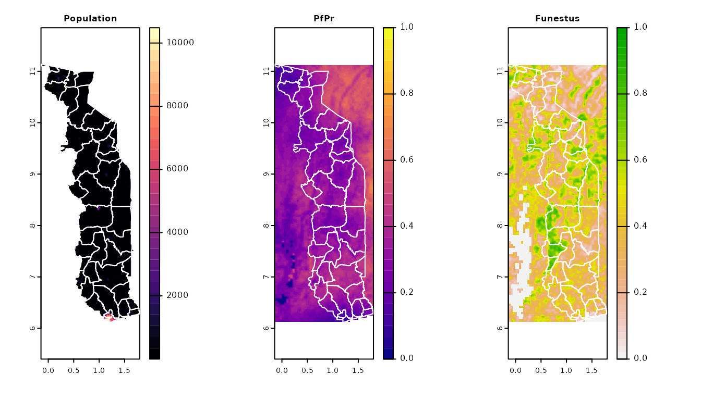
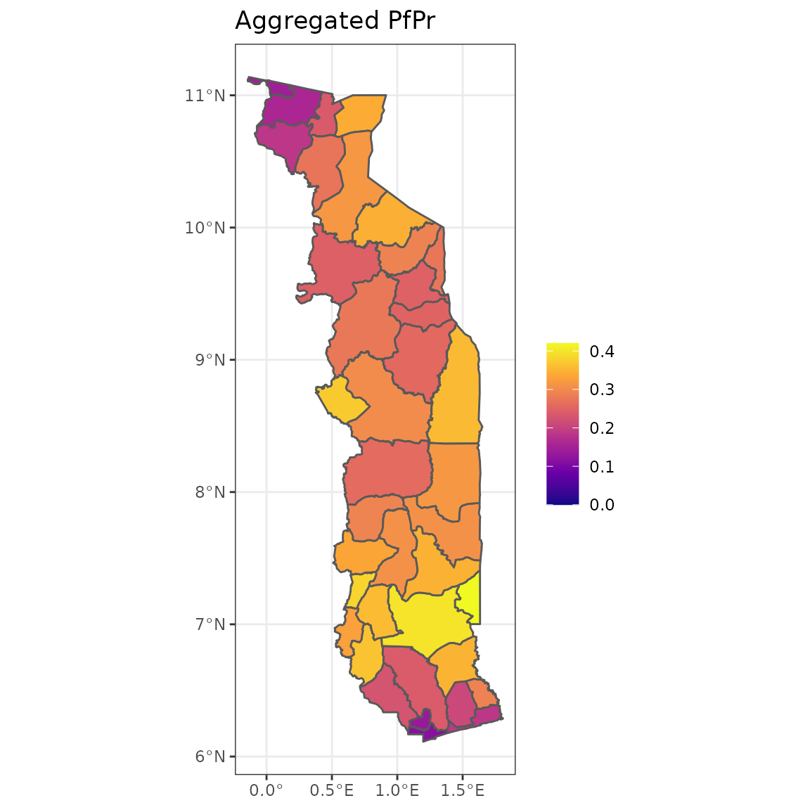

Introduction
Introduction.Rmd
library(cart)
library(terra)
library(geojsonsf)
library(jsonlite)
library(dplyr)
library(tidyr)
library(ggplot2)
library(viridis)To parameterise a malariasimulation run for a specific context, we often need to gather and summarise spatial data, provided in the form of rasters. We can use cart to help get commonly used versions of these data. This can be
- Population estimates from WorldPop.
- Vector species data from Malaria Atlas Project.
- Prevalence maps from Malaria Atlas Project.
- Spatial limits of transmission maps from Malaria Atlas Project.
Let’s have a look at an example country. We can get the admin 2 unit boundaries for Togo from geoBoundaries.
# Get Togo admin 1 polygons from geoboundaries API
shape_file <- jsonlite::fromJSON("https://www.geoboundaries.org/api/current/gbOpen/TGO/ADM2/")
# As simple feature
sf_poly <- geojsonsf::geojson_sf(shape_file$gbAuthoritative$simplifiedGeometryGeoJSON)
# As spatVector
spatvec_poly <- as(sf_poly, "SpatVector")Now we can get the raster information we need for Togo
# Pull data
data <- pull_cart(iso3c = "TGO", year = 2019)
data
#> class : SpatRaster
#> dimensions : 604, 233, 8 (nrow, ncol, nlyr)
#> resolution : 0.008333333, 0.008333333 (x, y)
#> extent : -0.1429167, 1.79875, 6.107917, 11.14125 (xmin, xmax, ymin, ymax)
#> coord. ref. : lon/lat WGS 84 (EPSG:4326)
#> sources : TGO.tif
#> memory
#> memory
#> ... and 5 more source(s)
#> names : pop, pfpr, pvpr, funestus, arabiensis, gambiae, ...
#> min values : 0.5101755, 0.0000000, -1.0000000, 0.0000000, 0.0000000, 0.0000000, ...
#> max values : 10484.4794922, 0.7285141, -1.0000000, 0.9103349, 0.9524295, 0.9748867, ...
# Visualise some outputs
par(mfrow = c(1, 3))
terra::plot(data, y = 1, col = viridis::magma(30), main = "Population")
lines(spatvec_poly, col = "white")
terra::plot(data, y = 2, col = viridis::plasma(30), main = "PfPr", range = c(0, 1))
lines(spatvec_poly, col = "white")
terra::plot(data, y = 4, main = "Funestus", range = c(0, 1))
lines(spatvec_poly, col = "white")
Let’s extract those data
extracted_data <- unpack_cart(sf_poly, data)There are lots of post-processing steps we might want to do. For example, let’s estimate the population weighted falciparum prevalence for each administrative unit in Togo
summary_data <- extracted_data %>%
dplyr::select(shapeName, pop, pfpr) %>%
tidyr::unnest(cols = c(pop, pfpr)) %>%
tidyr::drop_na() %>%
dplyr::group_by(shapeName) %>%
dplyr::summarise(pfpr = round(weighted.mean(pfpr, pop), 3))
fc <- dplyr::left_join(sf_poly, summary_data, by = "shapeName") %>%
dplyr::select(pfpr)
ggplot(fc, aes(fill = pfpr)) +
geom_sf() +
scale_fill_viridis_c(option = "plasma", name = "", limits = c(0, 0.42)) +
theme_bw() +
ggtitle("Aggregated PfPr")
Other common operations we might want to perform would may include:
- Estimating population at risk, by setting the population in pixels outside of the spatial limits of transmission to equal 0
- Summarising the relative abundance of the top N vector species